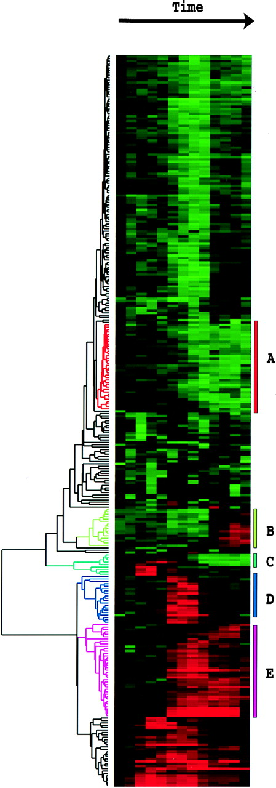
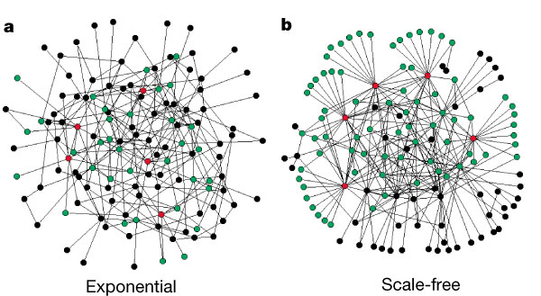

A General Framework For Weighted Gene Co-Expression Network Analysis
Bin Zhang & Steve Horvath
Keith Hughitt
Types of Molecular Biological Networks
- Cell signalling networks
- Metabolic networks
- Protein-protein interaction networks
- Co-expression networks
Basic goal: understand cellular phenomena at a systems scale.
Co-expression Networks
M. Eisen (1998)

- Clusters of co-expressed genes tend to have similar function in yeast.
- Used heatmaps to visualize clusters of gene expression profiles across time.
- Modified version of Pearson correlation used as similarity metrik.
Co-expression Networks
Mutual Information based methods
Butte & Kohane (2000)
- Mutual information relevance networks: functional genomic clustering using
pairwise entropy measurements (Butte and Kohane (2000))
- First co-expression networks
- Mutual Information (MI) used as similarity measure
- Edges determined via hard cutoff
Margolin et al. (2006)
- ARACNE: An Algorithm for the Reconstruction of Gene Regulatory Networks in a Mammalian Cellular Context
- MI estimation done using a Gaussian Kernel estimator (more efficient)
Co-expression Networks
Zhang & Horvath (2005)
- WGCNA
- Soft-threshold (weighted network)
- Pearson correlation used as similarity measure by default
- Also attempts to find functional modules in networks
Hong et al (2013)
- Canonical correlation analysis for RNA-seq co-expression networks.
WGCNA Overview
(Langfelder & Horvath, 2008)
Constructing a co-expression network
- Choose a similarity metric, construct a similarity matrix \(S\).
- Choose an adjacency function (e.g. signum/power)
- Use adjacency function to map from similarity matrix, \(S\) to adjacency matrix, \(A\).
Module detection
Once a co-expression network has been constructed, WGCNA can be used to detect module of genes with similar expression profiles.
- Choose a node dissimilarity measure.
- Common approach: 1 - Correlation
- WGCNA method: 1 - Topological Overlap
- Use hierarchical clustering to construct a dendrogram.
- Modules reflect dense branches on the dendrogram.
Constructing a co-expression network
Similarity matrix
Setup
Given a matrix \(X\) of \(n\) gene expression measurements across \(m\) sample measurements ("sample traits", e.g. disease state, time, etc.):
\[X = [x_{ij}]\]
The first step is to choose a similarity metric, e.g. |Pearson correlation|, and use it to construct a similarity matrix, \(S\).
\[ s_{ij} = |cor(i, j)| \]
Where
\[ cor(X, Y) = \rho_{X,Y} = \frac{Cov(X,Y)}{\sigma_X \sigma_Y} \]
The more similar a pair of gene's expression profiles are across time, the higher this value will be (max=1).
By applying the metric to each pair of genes in the dataset, an \(n \times n\) similarity matrix is produced.
Similarity matrix
Alternative similarity measures
- Jacknifed correlation coefficient
- Biweight midcorrelation
- Spearman correlation
- \(\frac{1 + cor(i, j)}{2}\)
Questions:
- Is pearson correlation a good measure of similarity at small \(n\)?
- How would the matrix look if we preserved the sign of the correlation coefficient?
Adjacency matrix
Once a similarity matrix has been constructed, this is converted into an adjaceny matrix, which defines the co-expression graph or network.
An adjacency function is chosen which maps from co-expression similarities to edge weights.
There are two major types of adjacency functions, the choice of which determines whether the resulting network will be weighted or unweighted.
- Unweighted (hard threshold)
- Remove all edges below a certain similarity cutoff; set everything else to 1.
- Sign (signum) function
- Weighted (soft threshold)
- Choose a function which maps from \((0,1)\) to \((0,1)\).
- Sigmoid function
- Power function
Signum Function (Unweighted Network)
$$ a_{ij} = signum(s_{ij}, \tau) \equiv
\left\{
\begin{array}{l l}
1 & \quad \text{if}\ s_{ij} \ge \tau\\
0 & \quad \text{if}\ s_{ij} \lt \tau
\end{array} \right.
$$

Sigmoid Function (Weighted Network)
$$
a_{ij} = sigmoid(s_{ij}, \alpha, \tau_0) \equiv \frac{1}{1 + e^{-\alpha(s_{ij} - \tau_0)}}
$$
Power Function (Weighted Network)
$$
a_{ij} = power(s_{ij}, \beta) \equiv |s_{ij}|^\beta
$$

Power Function (Weighted Network)
- WGCNA uses the power function by default to map from the similarity matrix to an adjacency matrix.
- Why?:
- Sigmoid and power function results in similar adjacency matrices if parameters are chosen based on same criterion (discussed next).
- Power adjacency function has the "factorization property"
- \(a_{ij} = a_i * a_j\)
- Understanding network concepts in modules (Dong & Horvath, 2007)
Different adjacency functions can be used to arrive at the same result
How do we select an appropriate adjacency function?
Scale-free networks
- Many biological networks (including co-expression networks) are thought to follow a power law distribution.
- For co-expression networks with genes as nodes, the degree distribution \(p(k)\) for genes follows: \[ p(k) \sim k^{-\gamma} \] where \(k\) is the number of connections to other genes.
- Networks which follow this degree distribution are referred to as "scale-free".
- Scale-free networks are robust to errors, however,
- They are also vulnerable to attack at particular nodes (good for us!).
Scale-free networks
Albert, Jeong & Barabási (2002)

Scale-free networks
The exponent \(\gamma\) determines how quickly the distribution decays, for example:

Real-world scale-free networks most often have values of \(k\) between 2 and 3.
Scale-free networks
- This property of biological networks can be used by us to help guide our selection of an adjacency function and parameters.
- The goal then becomes selecting a function and parameters such that the resulting co-expression network has the scale-free property.
Scale-free networks
Evaluating the fit using a log-log plot.
Topological Overlap Matrix
- The preferred method used by WGCNA to cluster gene expression profiles is to first construct a similarity matrix using a measure called Topological Overlap.
- Topological overlap \(\sim\) interconnectedness between two genes
- The resulting Topological Overlap Matrix (TOM) is then subtracted from one to obtain a dissimilarity measure which can be used for clustering.
- TOM \(\Omega = [\omega_{ij}]\)
\[ \omega_{ij} = \frac{l_{ij} + a_{ij}}{\min{\{k_i, k_j\}} + 1 - a_{ij}} \]Where\[l_{ij} = \sum_u{a_{iu}a_{uj}}\]And\[k_i = \sum_u{a_{iu}}\]
(\(l_{ij} \approx\) shared neighbors, \(k_i =\) how connected \(i\) is itself)
Topological Overlap Matrix
Comparison of using topological overlap with \(1 - S_{ij}\).

What we have so far...
Similarity matrix
T. cruzi (4-24hrs)
Adjacency matrix
T. cruzi (4-24hrs)
Topological overlap matrix
T. cruzi (4-24hrs)

Module detection
Clustering gene expression profiles
K-means clustering of T. cruzi RNA-Seq time-course data (just an example to give us a picture of what we are doing.)
Clustering
- Average linkage hierarchical clustering used to group genes based on their TOM dissimilarity.
- Gene modules then correspond to branches in the hierarchical clustering dendrogram.
- Smaller power law exponent: fewer modules, more genes
- Larger power law exponent: more modules, fewer genes
- For me: ~5-25 modules on average, depending on params.
TOM Plot
TOM Plot can help us to visualize gene modules: red blocks along the diagonal correspond to clusters of genes with a high topological overlap. These are our clusters.
Module Eigengenes
Module eigengenes can be computed and a dendrodram of the eigengenes can be constructed and used to guide the merging of similar modules.
Comparison to other clustering methods
When comparing the results of WGCNA module detection to other commonly used clustering methods, the results can be very different.

Network Visualization
Problem
- Estimate hard threshold cutoff and use that when exporting network for visualization!
- In order the visualize the network using something like Cytoscape, a hard threshold has to be chosen to limit the number of edges.
- Since the adjacency function is monotonically increasing, however, this in effect gives us the same network as if we had used hard-thresholding to begin with.
References
- Réka Albert, Hawoong Jeong, Albert-László Barabási, (2000) Error And Attack Tolerance of Complex Networks. Nature 406 378-382 10.1038/35019019
- Peter Langfelder, Steve Horvath, (2008) Wgcna: an R Package For Weighted Correlation Network Analysis. Bmc Bioinformatics 9 559-NA 10.1186/1471-2105-9-559
- Adam A Margolin, Ilya Nemenman, Katia Basso, Chris Wiggins, Gustavo Stolovitzky, Riccardo Favera, Andrea Califano, (2006) Aracne: an Algorithm For The Reconstruction of Gene Regulatory Networks in A Mammalian Cellular Context. Bmc Bioinformatics 7 S7-NA 10.1186/1471-2105-7-S1-S7
Bin Zhang, Steve Horvath, (2005) A General Framework For Weighted Gene co-Expression Network Analysis. Statistical Applications in Genetics And Molecular Biology 4 10.2202/1544-6115.1128
Butte AJ, Kohane IS. (2000) Mutual information relevance networks: functional genomic clustering using pairwise entropy measurements